前往Bybit官方註冊頁
點擊Bybit註冊連結進入官方註冊頁面，準備建立新帳號。建議使用常用信箱或手機號碼註冊，方便後續接收驗證碼與帳號通知
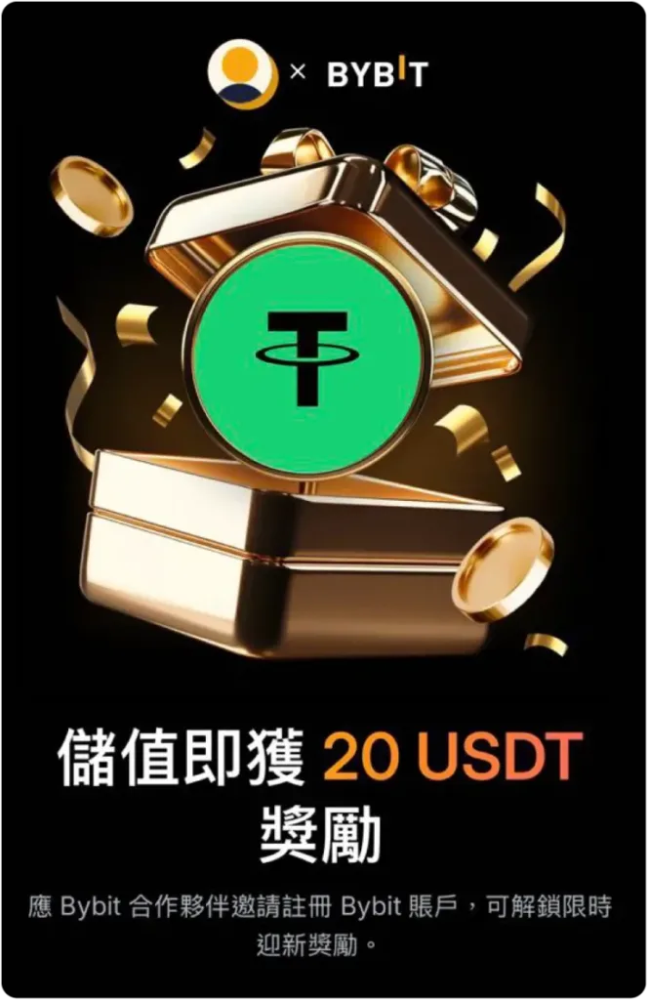
Bybit是許多用戶常用的加密貨幣交易平台之一，可用來購買USDT、管理加密貨幣資產，並將USDT轉入其他平台錢包使用
本篇教學會整理Bybit註冊、KYC身份驗證、使用TWD購買USDT，以及將USDT從Bybit提現到Stake錢包的完整流程。對第一次接觸加密貨幣入金的新手來說，可以依照以下步驟一步一步完成操作
如果你是第一次註冊Bybit，請先確認推薦碼欄位是否正確填入，避免後續活動資格或回饋申請受到影響
已經有Bybit帳號了嗎？可以直接往下查看Bybit入金、USDT購買與Stake入金流程
整個流程可以分成三個主要階段，建議依照順序完成，避免中途卡在身份驗證或轉帳網路設定
開始使用Bybit前，建議先完成帳號註冊與KYC身份驗證。完成KYC後，帳號才能正常使用更多平台功能，也能降低後續入金、提現或活動審核時遇到問題的機率
點擊Bybit註冊連結進入官方註冊頁面，準備建立新帳號。建議使用常用信箱或手機號碼註冊，方便後續接收驗證碼與帳號通知

依照頁面指示填寫註冊資料，並確認推薦碼欄位已正確填入 SLBROS。如果推薦碼欄位沒有自動帶入，請手動輸入後再送出註冊
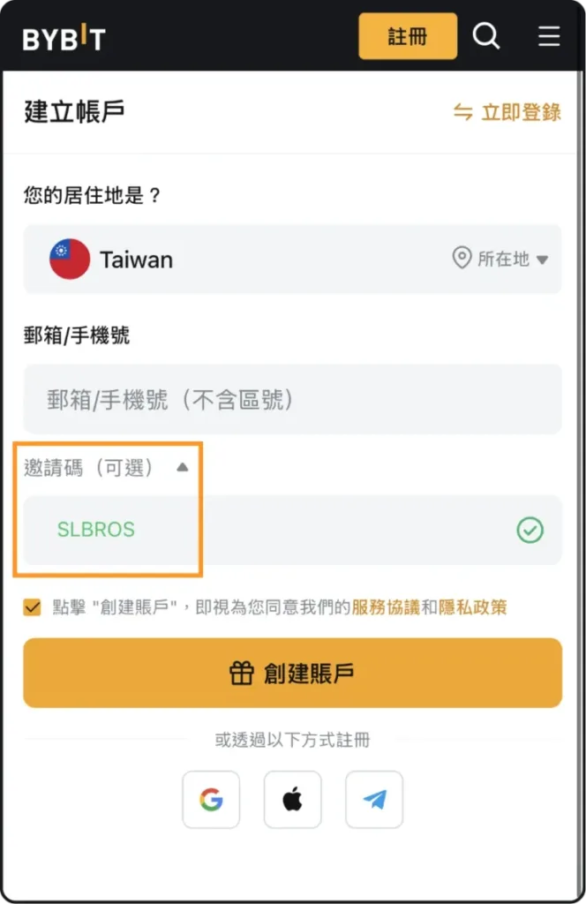
設定符合規則的登入密碼後，輸入驗證碼並完成帳號建立。建議密碼不要與其他平台共用，並妥善保存登入資訊
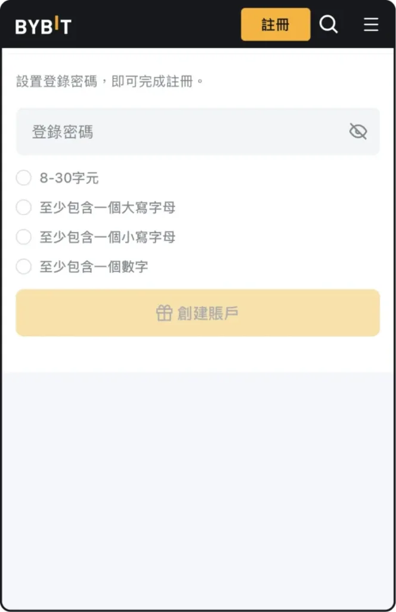
進入KYC身份驗證頁面後，依照系統指示選擇要上傳的身份文件。一般可使用身份證、護照、駕照或平台支援的其他文件類型
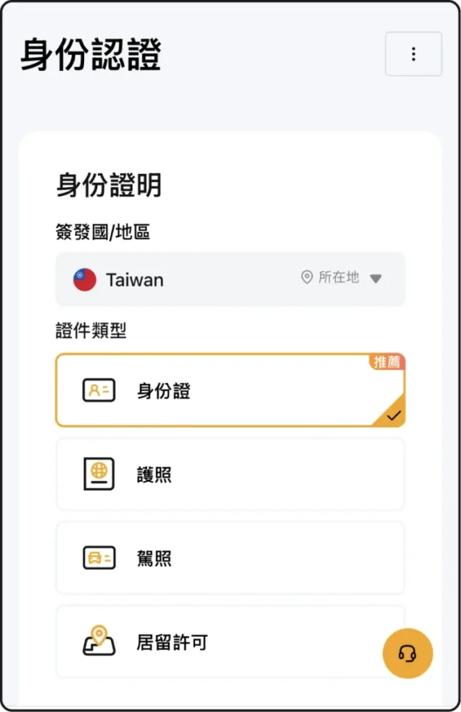
依照畫面提示拍攝身份證明文件，並完成臉部辨識或Liveness檢查。上傳時請確認畫面清楚、資料完整，避免因照片模糊導致審核失敗
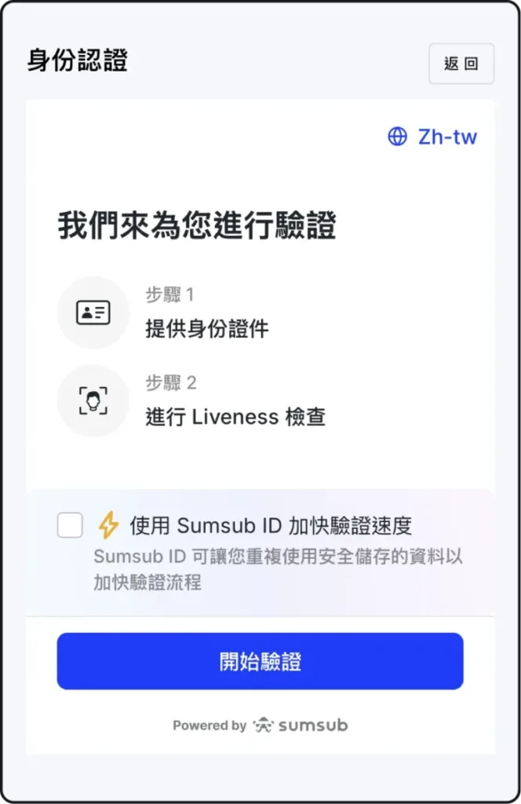
送出資料後，系統會進行身份審核。一般情況下會在數分鐘至一段時間內完成，實際時間依Bybit系統審核狀況為準
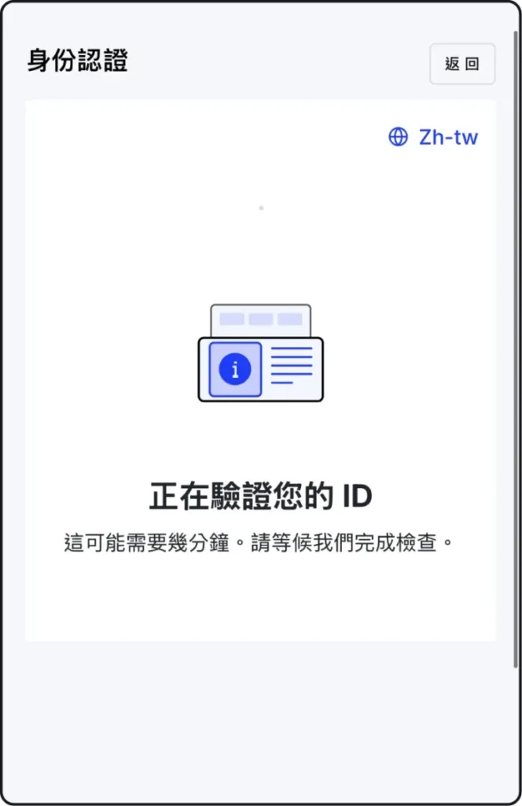
完成註冊與KYC後，就可以開始在Bybit購買USDT。以下流程以使用TWD購買USDT為例，實際畫面與支付方式可能會因地區、帳號狀態與平台更新而略有不同
登入Bybit後，進入資產頁面或首頁右上角，點擊「充值」開始進行入金操作
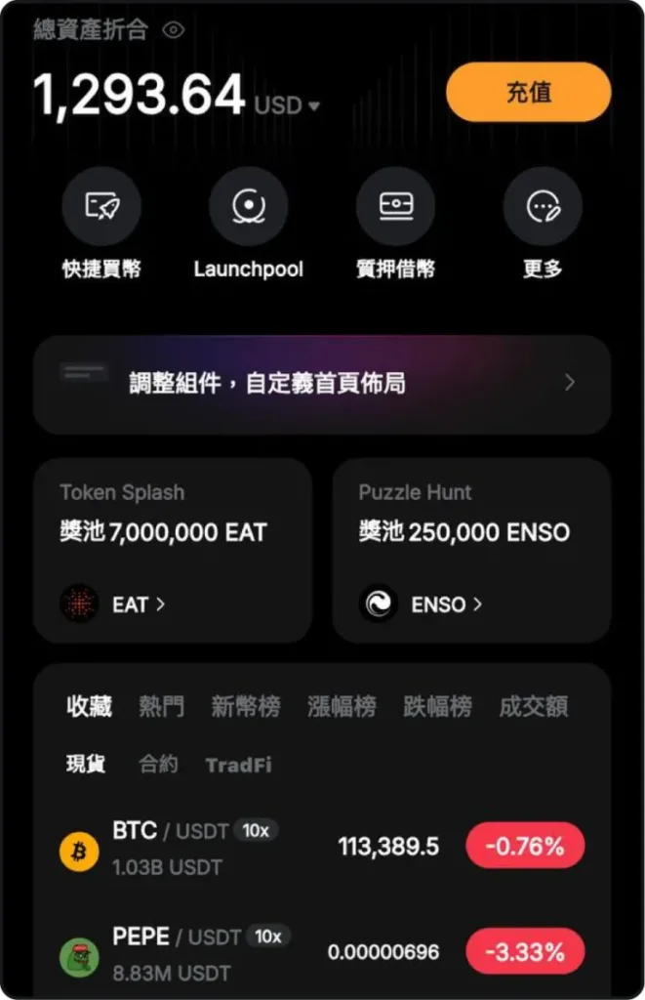
在入金方式中選擇「用TWD買幣」。這個方式適合想用新台幣購買USDT的新手操作
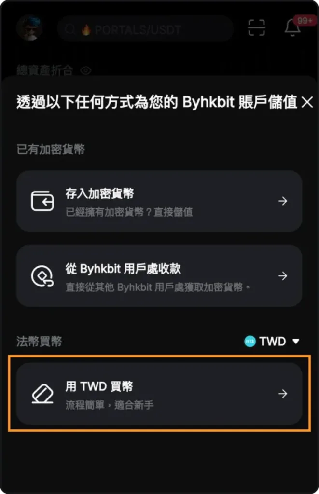
輸入想購買的金額，並確認購買幣種為USDT。系統會依照當下匯率試算可獲得的USDT數量
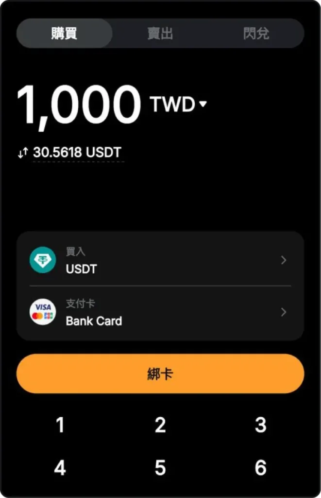
依照頁面指示填寫付款資料，包含信用卡或平台支援的付款資訊。填寫前請確認資料正確，避免交易失敗或審核延遲
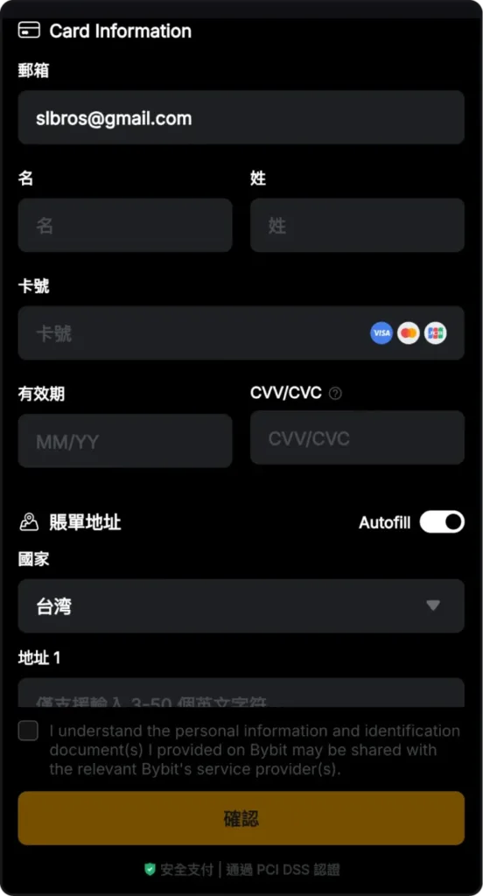
確認購買金額、付款方式與預估獲得的USDT數量後，點擊下一步進入最後確認畫面
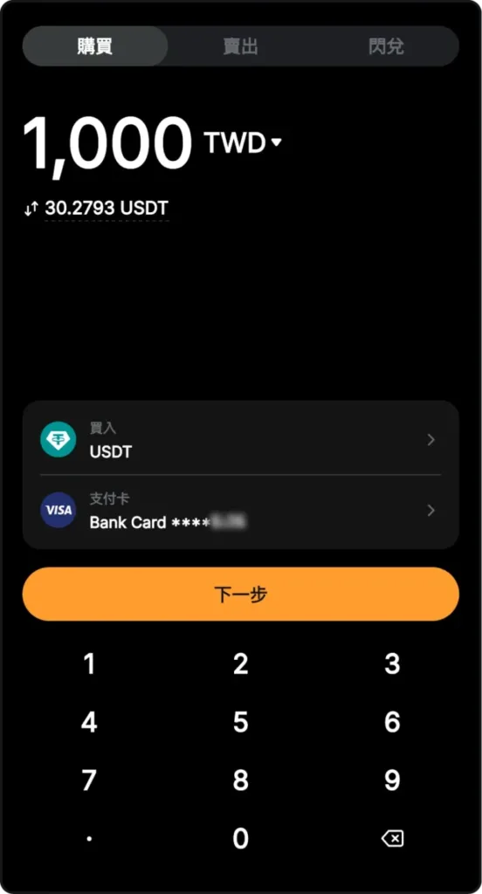
最後確認交易資訊，包含USDT數量、匯率、手續費與總支付金額。確認無誤後送出交易，等待USDT入帳至Bybit帳戶
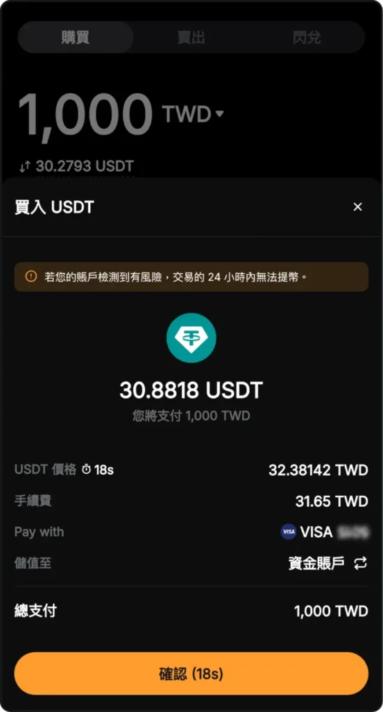
當Bybit帳戶中已有USDT後，就可以將USDT提現到Stake錢包。操作時最重要的是確認幣種、網路與地址完全一致，避免因選錯鏈或貼錯地址造成資產遺失
登入Stake後，進入錢包頁面，選擇USDT，並點擊「存款」取得充值地址
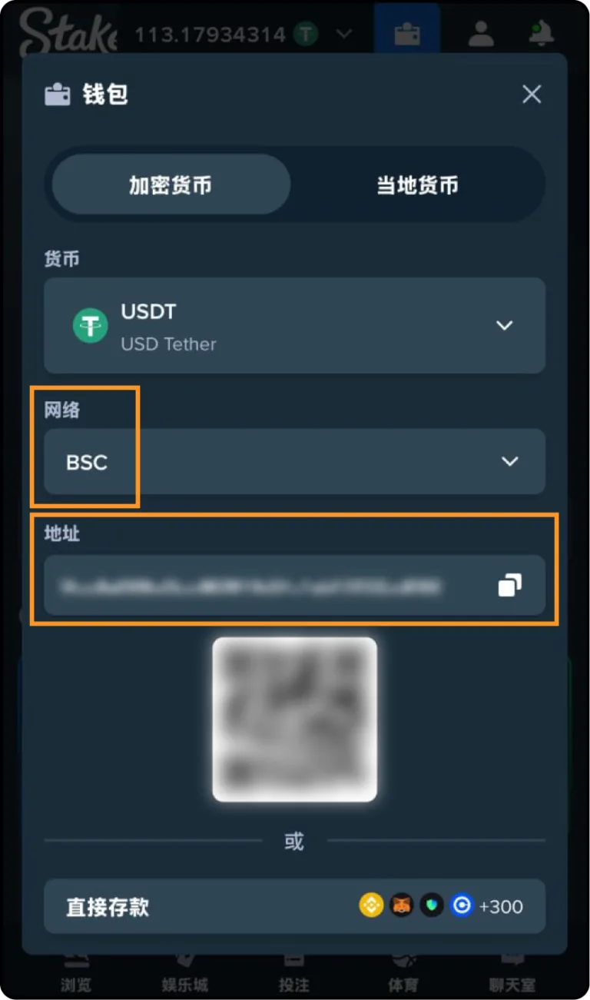
在Stake錢包中選擇幣種USDT，並確認使用的網路。例如頁面顯示為 BSC（BEP20），後續在Bybit提現時也必須選擇相同網路
複製Stake提供的USDT充值地址後，回到Bybit資金帳戶，選擇USDT並點擊「提現」
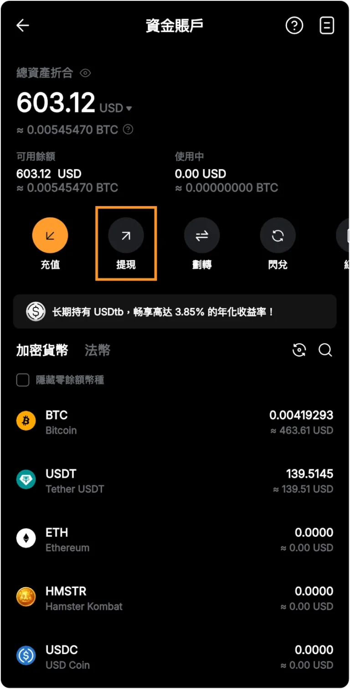
在提現方式中選擇「鏈上提幣」，準備將USDT轉出至Stake錢包地址
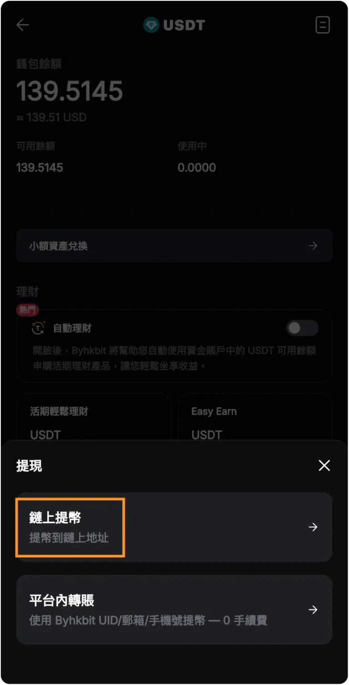
貼上Stake錢包提供的USDT地址，並確認網路與Stake顯示的網路一致，例如 BSC（BEP20）。接著輸入要轉出的USDT金額並送出提現
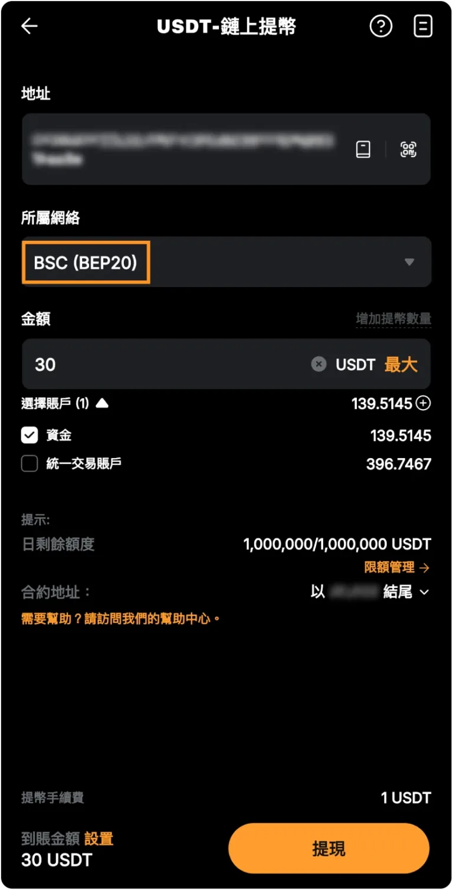
送出提現後，等待鏈上轉帳完成。完成後可在Stake錢包的交易紀錄中查看入金狀態
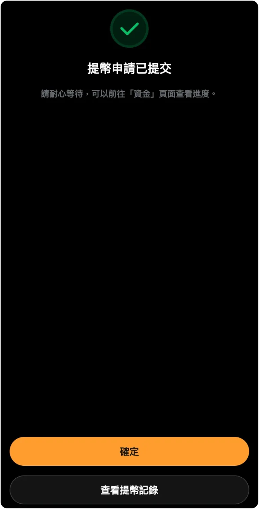
以下五點是新手最常出錯的地方，操作前先確認一次，可以大幅降低入金失敗或資產遺失的風險
註冊Bybit前請確認推薦碼欄位已填入 SLBROS。若推薦碼未成功綁定，可能會影響後續活動資格或回饋申請
建議先完成KYC身份驗證，再進行USDT購買或提現。未完成身份驗證時，部分功能可能會受到限制
從Bybit提現到Stake時，幣種、網路與地址必須完全一致。如果Stake顯示BSC（BEP20），Bybit提現時也要選擇BSC（BEP20）
第一次操作USDT提現時，建議先用小額測試，確認地址與網路正確後，再進行較大金額轉帳
加密貨幣轉帳會產生鏈上手續費，實際到帳時間也會依區塊鏈壅塞程度而不同。若長時間未到帳，可先查詢Bybit提現紀錄與Stake交易紀錄
小提醒：轉帳前務必再核對一次「幣種、網路、地址」三項資訊。三者只要有一項不一致，就有可能導致USDT無法入帳
建議完成KYC後再操作。完成KYC可以解鎖更多帳號功能，也能降低後續購買USDT、提現或參加活動時遇到限制的機率
可以依照帳號所在地區與平台支援方式，選擇用TWD購買USDT。實際付款方式、匯率與手續費會以Bybit頁面顯示為準
先在Stake錢包取得USDT充值地址與網路，再回到Bybit選擇USDT提現，貼上地址、選擇相同網路並輸入金額後送出
如果提現網路與收款地址網路不一致，可能導致資產無法入帳或遺失。因此轉帳前一定要確認幣種、地址與網路完全一致
第一次操作建議先小額測試，確認Bybit提現與Stake入金流程都正確後，再進行較大金額轉帳
到帳時間會依區塊鏈網路狀況與平台處理速度而不同。送出後可先查看Bybit提現紀錄，再到Stake錢包交易紀錄確認